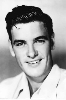

Country:United States, 69 minutes
Spoken languages:English, Spanish
Genres:Horror, Sci-Fi
Director(s):Ray Kellogg
Writer(s):Jay Simms
Video Codec:Unknown
Number: 87


Certification:NR
Storyline:
Trapped on a remote island by a hurricane, a group discover a doctor has been experimenting on creating half sized humans. Unfortunately, his experiments have also created giant shrews, who when they have run out of small animals to eat, turn on the humans....
Cast: 

Medium: Original DVD,
Comments: Part of: 100 Greatest Horror Classics
Loaned: No
Aspect ratio: Unknown